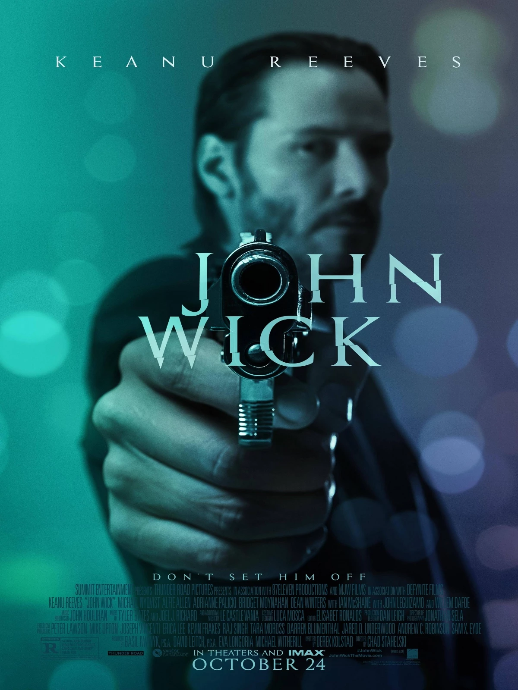

Después de que John Wick pierde a su esposa, Helen, por una enfermedad terminal, recibe un cachorro beagle llamado Daisy de su difunta esposa para ayudarlo a sobrellevar su dolor. A pesar del comportamiento estoico de John, él se une con el cachorro y pasan el día conduciendo en su ford mustang boss 429 1969. En una estación de servicio, se encuentra con un trío de gánsteres rusos cuyo líder, Iosef, insiste en comprar su automóvil, pero John reiteradamente afirma que no está a la venta. Frustrados, los mafiosos siguen a John a su casa, lo dejan inconsciente, roban su auto y matan a Daisy.
TRAILER
REPARTO
Keanu Reeves como John Wick
Michael Nyqvist como Viggo Tarasov
Alfie Allen como Iosef Tarasov
Adrianne Palicki como Ms. Perkins
Bridget Moynahan como Helen Wick
Dean Winters como Avi.
Ian McShane como Winston
John Leguizamo como Aurelio
Willem Dafoe como Marcus
MUSICA
La partitura musical para John Wick fue compuesta por Tyler Bates y Joel J. Richard. con música de violín en pantalla interpretada por Scott Tixier.
Killing Strangers
GET MONEY
LANZAMIENTO

John Wick se estrenó en el Regal Union Square Theatre, Stadium 14 el 13 de octubre de 2014 en la ciudad de Nueva York. Tuvo una proyección anterior en el Austin Fantastic Fest el 19 de septiembre, donde abrió la sección oficial de la barra lateral, Proyección de Gala Especial, en una recepción sorprendente. Se inauguró en Los Ángeles en el ArcLight Hollywood el 22 de octubre de 2014. John Wick tuvo su estreno en televisión en el canal de Estados Unidos el 12 de marzo de 2017.
VIDEOJUEGO
El 7 de agosto de 2015, Lionsgate y Starbreeze Studios anunciaron una asociación para desarrollar un juego de realidad virtual de disparos en primera persona basado en la película para HTC Vive/Steam VR. El desarrollo estaba a cargo de Grab Games, con Starbreeze listo para publicar. WEVR debía desarrollar una experiencia introductoria para el juego. El juego fue lanzado el 9 de febrero de 2017, con el nombre de John Wick Chronicles. y tener una narrativa independiente basada en el Hotel Continental. Además, el contenido de John Wick, un paquete de personajes gratuito y un paquete de armas de pago, se lanzó para los juegos de Payday 2 el 20 de octubre de 2016, como promoción cruzada. El personaje de "El segador" en Fortnite: Battle Royale a menudo se denominaba John Wick. Desde entonces se ha lanzado un skin oficial de John Wick junto con un modo de juego limitado titulado "Wick’s Bounty".
SECUELAS
Una secuela fue lanzada el 10 de febrero de 2017, y en la CinemaCon 2016, Reeves insinuó que se habían planeado más secuelas. Tras el lanzamiento de John Wick: Capítulo 2, se lanzó una tercera película a partir del 17 de mayo de 2019 con el nombre de John Wick: Capítulo 3 - Parabellum. Se está preparando una cuarta entrega, John Wick: Capítulo 4, y se lanzará el 21 de mayo de 2021.La fecha de estreno de John Wick 4 se ha retrasado debido a la pandemia de coronavirus segun Hollywood Reporter. La nueva fecha seria el 27 de Mayo del 2022.